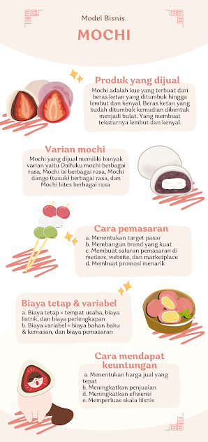

Mochi
Mochi adalah kue beras Jepang yang terbuat dari beras ketan, ditumbuk menjadi pasta lalu dibentuk. Teksturnya kenyal, lembut, dan sedikit manis. Mochi bisa dinikmati langsung, dipanggang, atau dijadikan bahan dasar berbagai makanan penutup dan camilan tradisional Jepang.
Proyek

Judul Proyek 1
Deskripsi singkat tentang proyek 1.
Judul Proyek 1
Deskripsi singkat tentang proyek 1.
Kontak
Email: contoh@email.com
Telepon: 081234567890